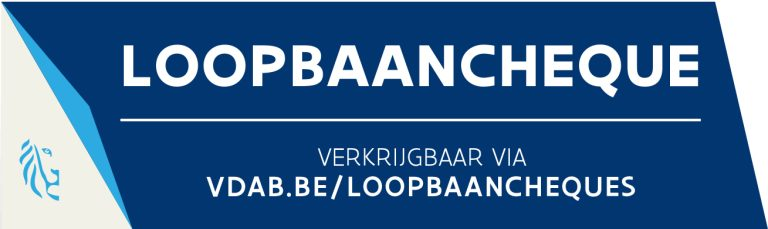

01
Life coaching
Ruimte om stil te staan bij wie jij bent en wat je nodig hebt. Rond zelfvertrouwen, grenzen, zingeving en persoonlijke groei.
Meer infoCoaching in Antwerpen
Een plek om te vertragen, helderheid te vinden en bewuste keuzes te maken.
Voor leven, loopbaan en ondernemen — in Antwerpen en online.
Over mij
Mijn naam is Liesbeth, coach en oprichter van De Tussenruimte in Antwerpen. In mijn werk begeleid ik mensen die op een kruispunt staan in hun leven, loopbaan of onderneming en verlangen naar meer helderheid, richting en innerlijke rust.
Mijn eigen zoektocht naar een job die echt bij mij paste, heeft me geleerd hoe waardevol het kan zijn om af en toe te vertragen en bewust stil te staan bij waar je staat en waar je naartoe wil. Die ervaring werd een belangrijke drijfveer om me te verdiepen in coaching en anderen te begeleiden in hun proces van groei en zelfontwikkeling.
Ik volgde een uitgebreide professionele coachopleiding bij The Job Coach Academy en specialiseerde me doorheen de jaren onder andere in loopbaancoaching, stress- en burn-outbegeleiding, perfectionisme, faalangst, zelfvertrouwen en assertiviteit.
Daarnaast heb ik me verdiept in lichaamsgerichte benaderingen en hierin een solide basis ontwikkeld, omdat ik geloof dat echte verandering niet alleen ontstaat door inzicht, maar ook door opnieuw verbinding te maken met wat je voelt en nodig hebt.
In mijn begeleiding staat oprechte aandacht centraal. Met een warme en betrokken aanpak, heldere gesprekken en een praktische kijk help ik je om inzicht te krijgen in wat je tegenhoudt, je kwaliteiten en verlangens opnieuw te ontdekken en stappen te zetten die echt bij jou passen.
Voor mij is De Tussenruimte precies dat: een plek waar je even op pauze kan drukken en uit de drukte van het dagelijkse leven kan stappen — een moment waarin oude zekerheden mogen loskomen en nieuwe mogelijkheden zichtbaar worden.
Aanbod
Ruimte om stil te staan bij wie jij bent en wat je nodig hebt. Rond zelfvertrouwen, grenzen, zingeving en persoonlijke groei.
Meer infoHelderheid over je werk en je volgende stap. Erkend centrum — loopbaancheque mogelijk.
Meer infoFocus, richting en balans voor zelfstandigen en ondernemers. Strategie én innerlijke helderheid.
Meer infoErkend loopbaancentrum
Als loopbaancoach verbonden aan erkend centrum KONNEKT kan ik jou begeleiden via de officiële loopbaancheque — voor wie voor het eerst loopbaanbegeleiding volgt.
Kom je niet in aanmerking? Ook dan starten we graag een coachingstraject op maat — neem contact op voor de mogelijkheden.


Privé retraite — Antwerpen
Aan afstand van de dagelijkse drukte. Aan tijd en ruimte om te voelen, na te denken en opnieuw richting te vinden.
Bij De Tussenruimte kan je enkele dagen verblijven in alle rust. Volledig in stilte en op eigen tempo, of gecombineerd met coaching en verdiepende sessies.
Ervaringen
Contact
Plan een gesprek
Kies een moment dat jou past. Een vrijblijvend kennismakingsgesprek van 30 minuten.
Open mijn agendaStuur een bericht